Flask Installation
There are some issues about installing flask in Armbian OPi0+2. I applied commands below:
export LC_ALL="en_US.UTF-8" export LC_CTYPE="en_US.UTF-8" sudo dpkg-reconfigure locales sudo apt install python-pip sudo pip install setuptools sudo pip install flask
Project - First Flask Projects
First Flask App
My first ever Python Flask project instructed from creating-a-web-app-from-scratch-using-python-flask-and-mysql.
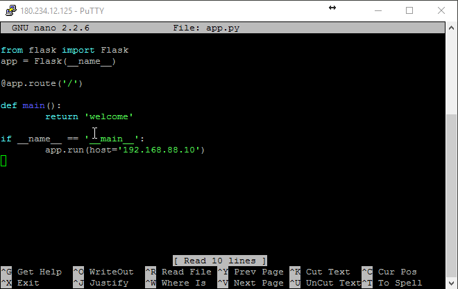
Observe that we added
app.run(host='192.168.88.10') to access this flask app from outside. I added route rules to the router to access the flask app from outside. Note that I am running the code on rock@180.234.12.125:8050. I route the port 8050 to 5000, as default flask app uses port 5000. The code from the blog does not uses the parameter inside app.run() . This first flask program only sends a welcome message as a response to the request
180.234.12.125:8050. On rock server the python program is in sudo python app.py . Then it will run the flask server on port 5000. But we will access it over I am not sure about the code
@app.route('\') what does it mean. This is a very basic app, We will create a new app that will render an external html page to the client. Here the concept of
Python Flask Bucket List App
-<-body->-
Python Flask App
This html will draw a page as follows:
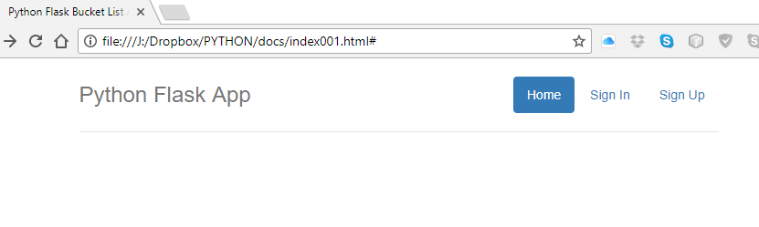
This way the bootstrap css classes are usefull to draw standard html pages. Observe the
See the
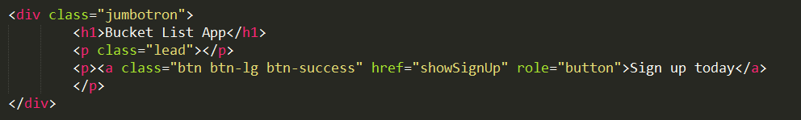
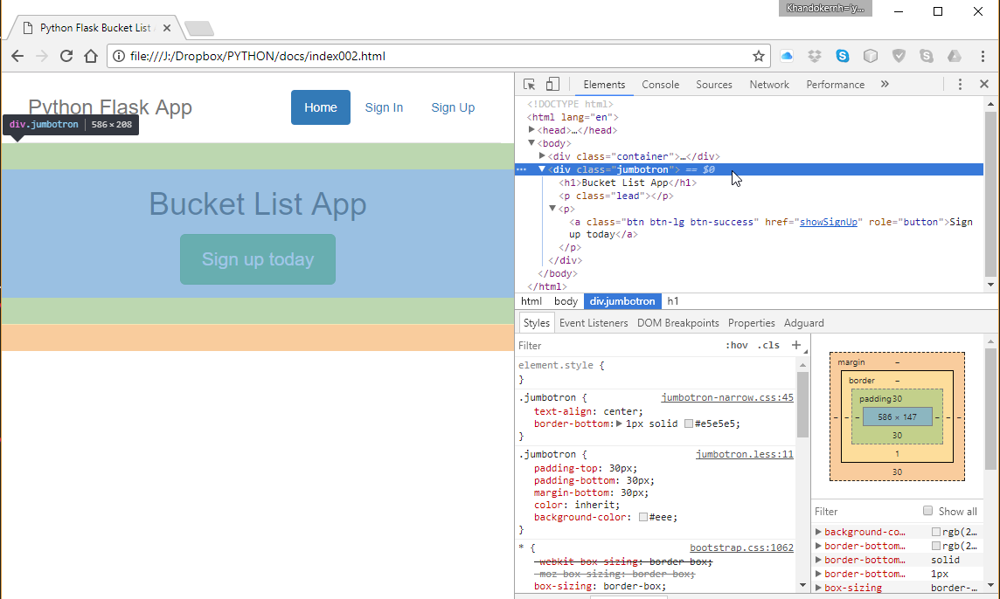
Then add these html codes to show the bucket list.
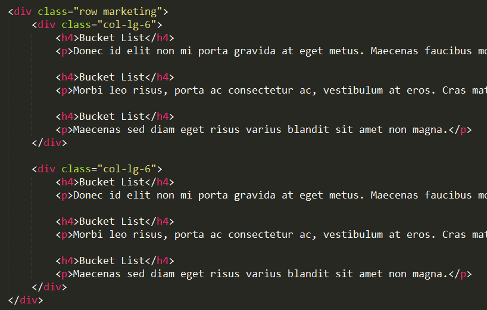
I am trying to understand the css parts that decorates the page. These css calsses gives the page some good looks:
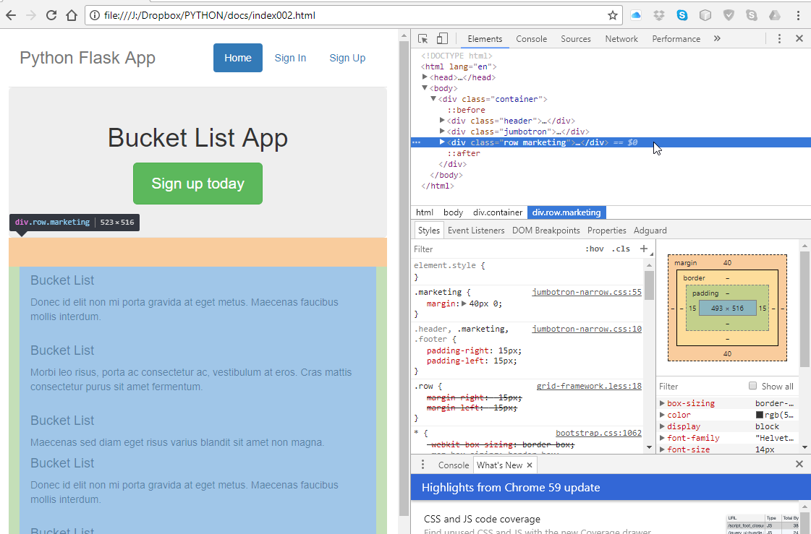
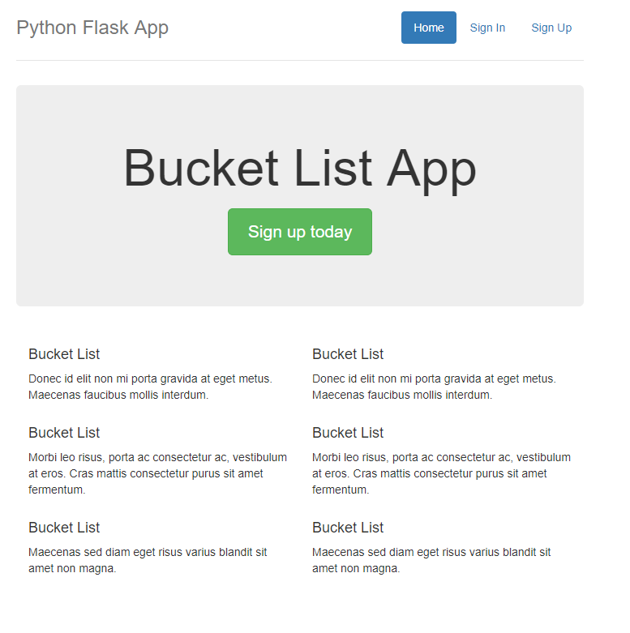
To apply this html file as a template, create a folder name
sudo chmod 777 templates . Then I copied a file 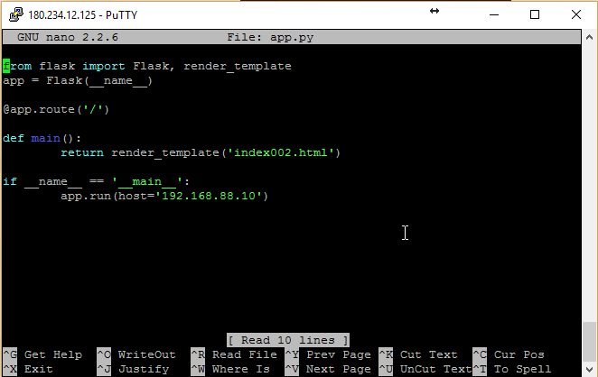
Now we will setup a mysql database by command line. In rock server, mysql user and password is
mysql -u root -p password: redhat07 CREATE DATABASE bucketlist; CREATE TABLE `bucketlist`.`tbl_user` ( `user_id` BIGINT NULL AUTO_INCREMENT, `user_name` VARCHAR(45) NULL, `user_username` VARCHAR(45) NULL, `user_password` VARCHAR(45) NULL, PRIMARY KEY (`user_id`));
Here I am using the stored procedure in MySql for the first time. Our
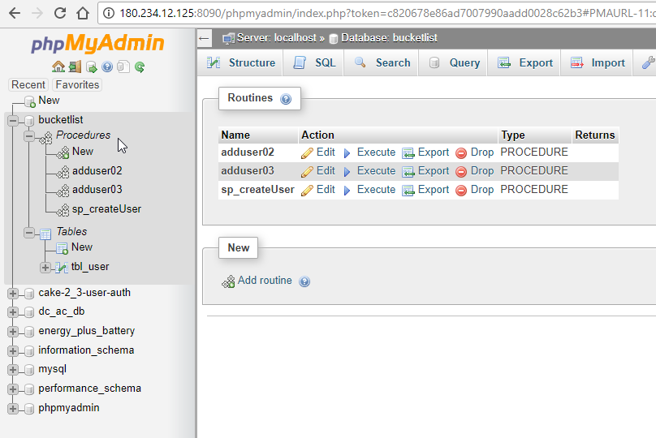
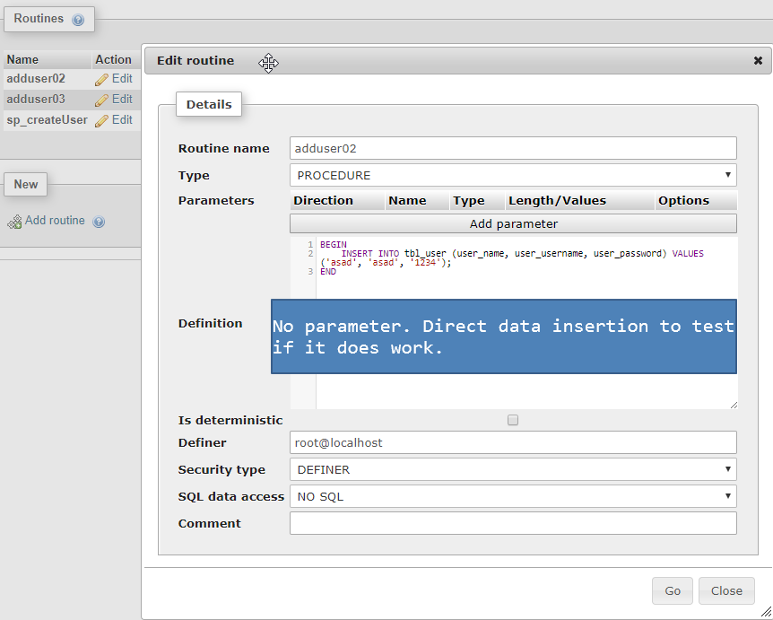
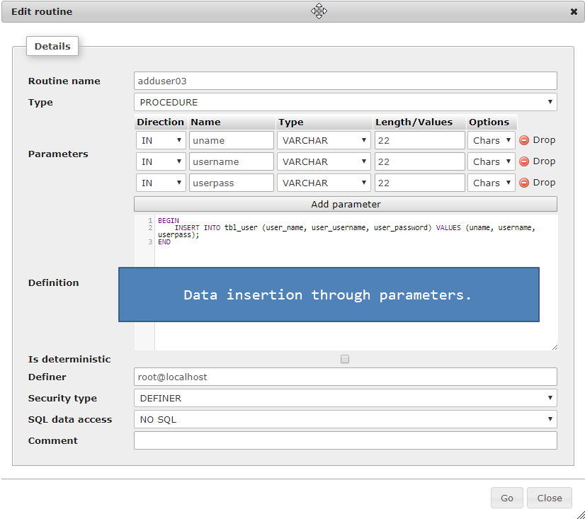
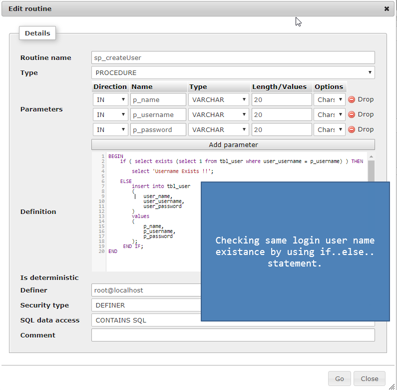
As instructed by Tutorial Page we need to create a singup page as follows:
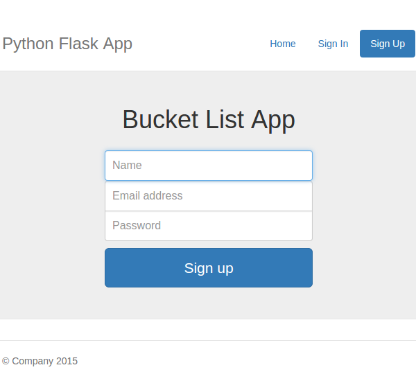
Create
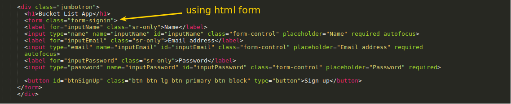
The tutorial also asked to add a CSS
body {
padding-top: 40px;
padding-bottom: 40px;
}
.form-signin {
max-width: 330px;
padding: 15px;
margin: 0 auto;
}
.form-signin .form-signin-heading,
.form-signin .checkbox {
margin-bottom: 10px;
}
.form-signin .checkbox {
font-weight: normal;
}
.form-signin .form-control {
position: relative;
height: auto;
-webkit-box-sizing: border-box;
-moz-box-sizing: border-box;
box-sizing: border-box;
padding: 10px;
font-size: 16px;
}
.form-signin .form-control:focus {
z-index: 2;
}
.form-signin input[type="email"] {
margin-bottom: -1px;
border-bottom-right-radius: 0;
border-bottom-left-radius: 0;
}
.form-signin input[type="password"] {
margin-bottom: 10px;
border-top-left-radius: 0;
border-top-right-radius: 0;
}
But my signup page does looks ok without the CSS. Now update the
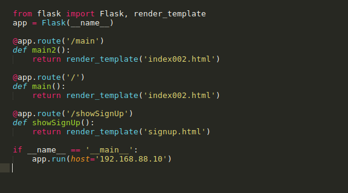
Note that we added an extra
'/main' route for home button.All these examples are about page routing and linking. We will apply the user signup registration process by the help of the tutorial.
We will add a new method and route
from flask import Flask, render_template, request, json
............
............
............
@app.route('/signUp',methods=['POST'])
def signUp():
# read the posted values from the UI
_name = request.form['inputName']
_email = request.form['inputEmail']
_password = request.form['inputPassword']
# validate the received values
if _name and _email and _password:
return json.dumps({'html':'All fields good !!'})
else:
return json.dumps({'html':'Enter the required fields'})
Observe that
We will use ajax call from html page. we need to download
Upto this ajax call and response the project is saved in
Now we will intigrate MySQL module to our program. There are some information gape from the tutorial because some of the modules name and some naming conventions are changed. Finally I managed to run the modules for MySQL stored procedure call and password hashing function. But the password was not saved to database ->
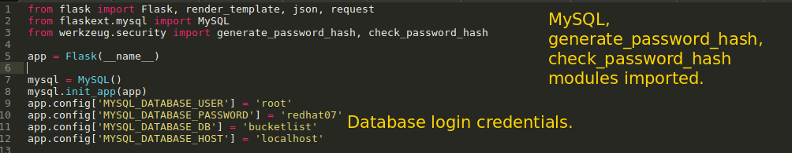
There also some changes at MySQL database operation calls from python.
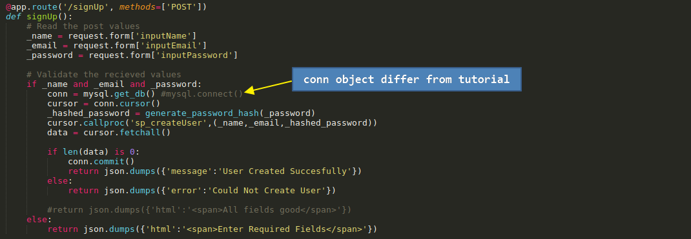
Now when user provides the info and credentials and pressed the signup button, the user informations are saved to
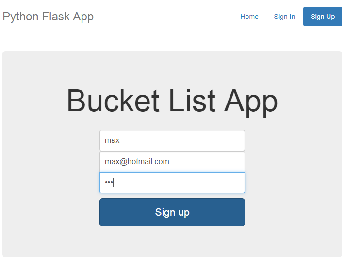
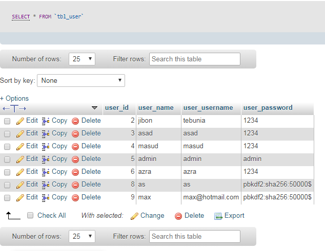
But till now the UI does not show any message whether the signup is successfull or not. It shows some messages to the browser console window. The button press sends ajax call to the server page
As per the tutorial 1st part ended here, We are moving to 2nd part :
We will create a sign in page for the user to login to the system. I created the
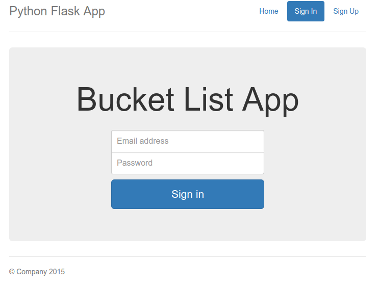
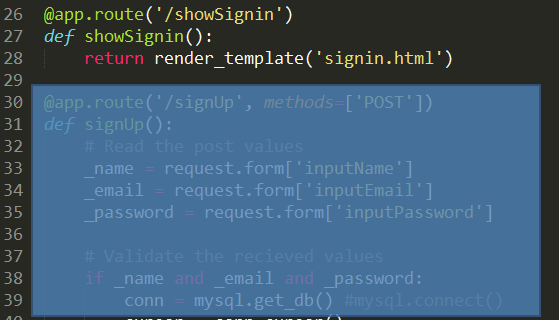
Remember that all the template files are in
Observe
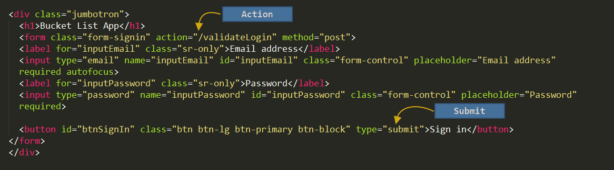
So the action is
DELIMITER $$
CREATE DEFINER=`root`@`localhost` PROCEDURE `sp_validateLogin`(
IN p_username VARCHAR(20)
)
BEGIN
select * from tbl_user where user_username = p_username;
END$$
DELIMITER ;
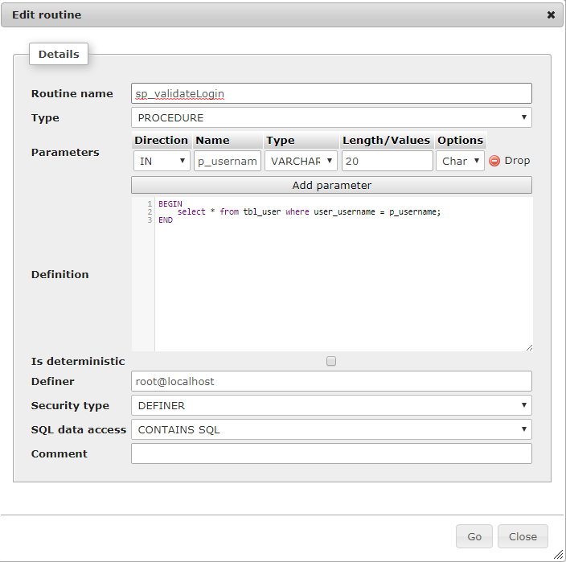
Now we have to write the
To use session in flask, it requires a secret key and SESSION_TYPE. Dont know yet why it is needed. The code uses
session['user'] = data[0][0] . 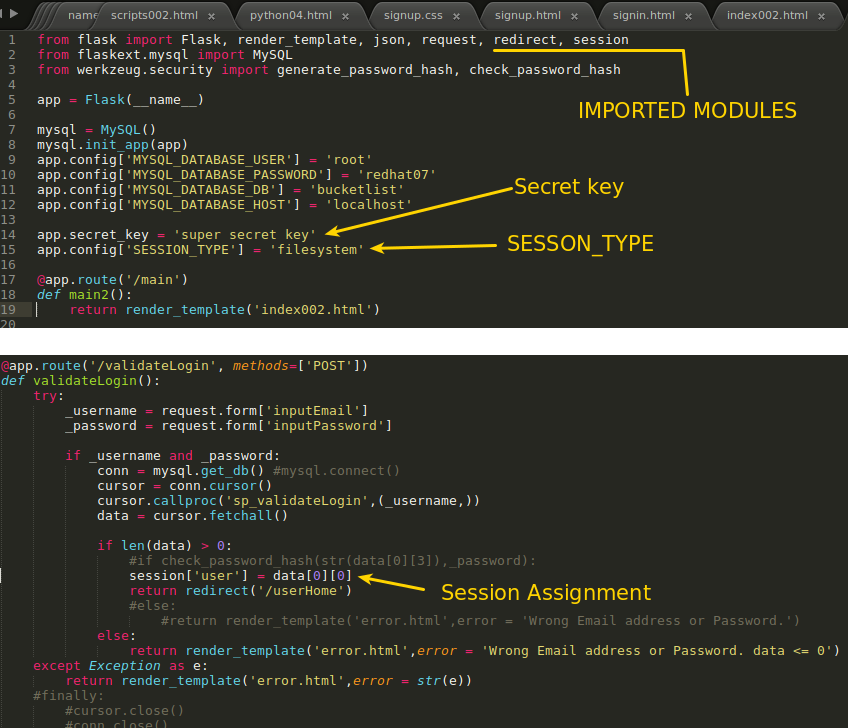
Up to this code we skipped password authentication for some errors. Up to this code functionality the project is saved as
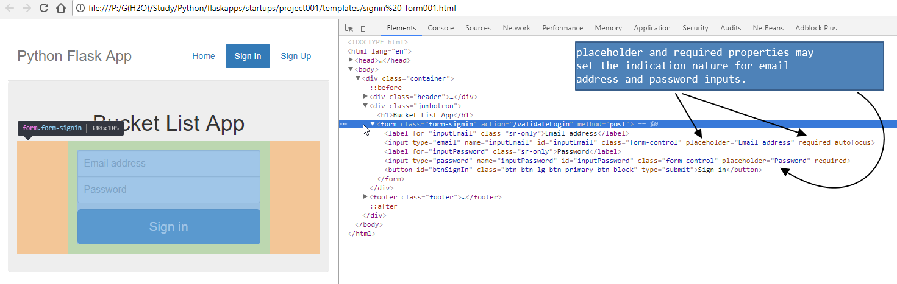
As we can see that this sign in form elements are decorated with bootstrap css supports.
We need to find out why the password checking is not working.
Ok , the error is
that means the parameter size was not enough to hold the hashed password. Here
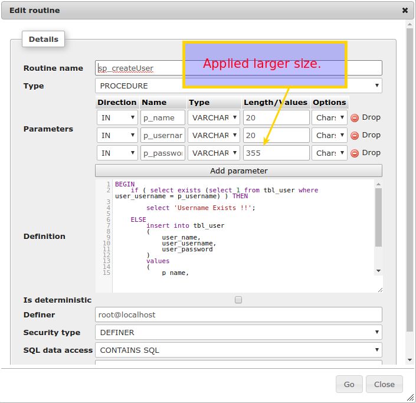
As the tutorial explained, I applied the session mechanism. When user login, a session element
session['user'] is assigned with a value user_id from database table logout() method imply the command session.pop('user', None) to remove the session.
Get Method and Parameters
I also did applied a GET Method code to the flask app as follows: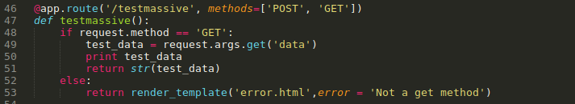
As we can see that it checks for method type and then takes dicision. This same function can also handle POST method. Observe how this function retrives the GET method's parameters.
Up to this functionality the code is saved as